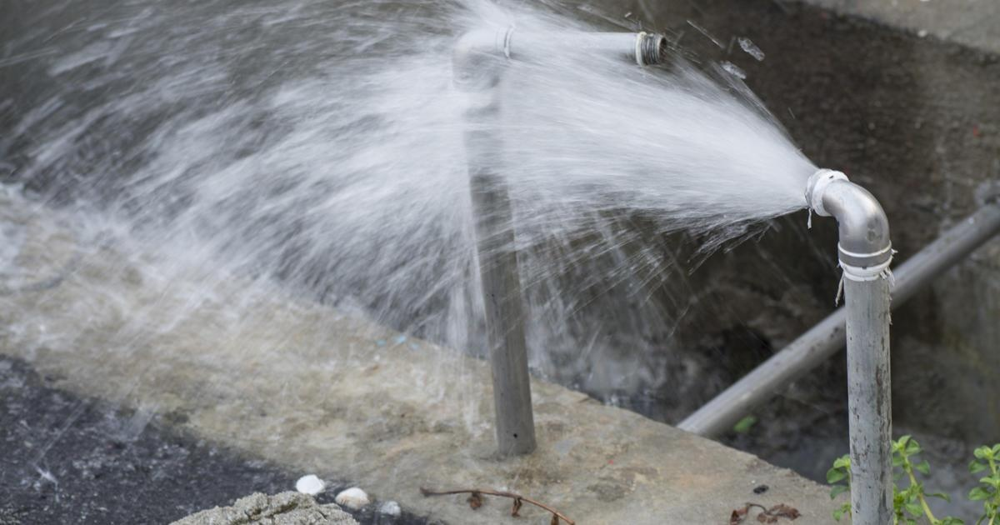

Pipes bursting, broken heaters... plumbers staying busy across North TexasGARLAND - The biggest cold front has come and gone in North Texas, but now Dallas - Fort Worth is seeing the ripple effect with pipes bursting all across the metroplex. Plumbers say they were especially busy on Wednesday. "It's a nonstop ringing up the phone," says master plumber, David Butler, with Milestone Home Services. He says Wednesday alone, they have gotten hundreds of calls for burst pipes. "Everybody calling and saying 'hey I've got water coming out my ceiling. I've got water going here. I've got water spraying out of my wall.' We're already booking through the middle of next week," Butler tells CBS News Texas. Butler says they also have gotten just as many calls for heating issues. He says they fix heaters, not the gas companies. "If your gas is shut off and you have no heat in the house and then your pipes freeze," Butler adds. Butler says the best thing to do to avoid calling a plumber, is to open your cabinets, and drip facets that lead to any outdoor pipes. He also says, if your pipes do burst, the homeowner needs to turn of water immediately and call a licensed plumber. You can turn off the water either on the curb of your home, or there are even valves located in the garage or behind the home. for more features. |
 |